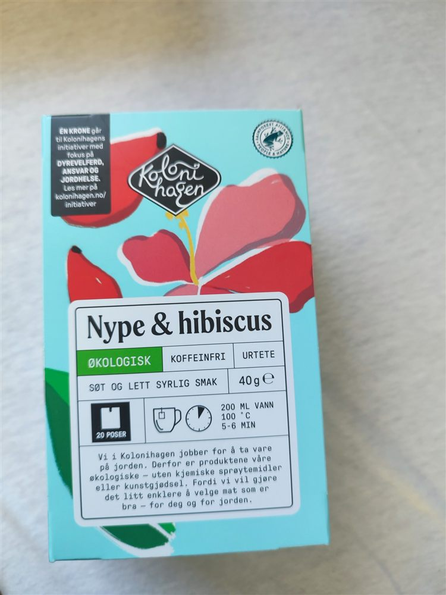
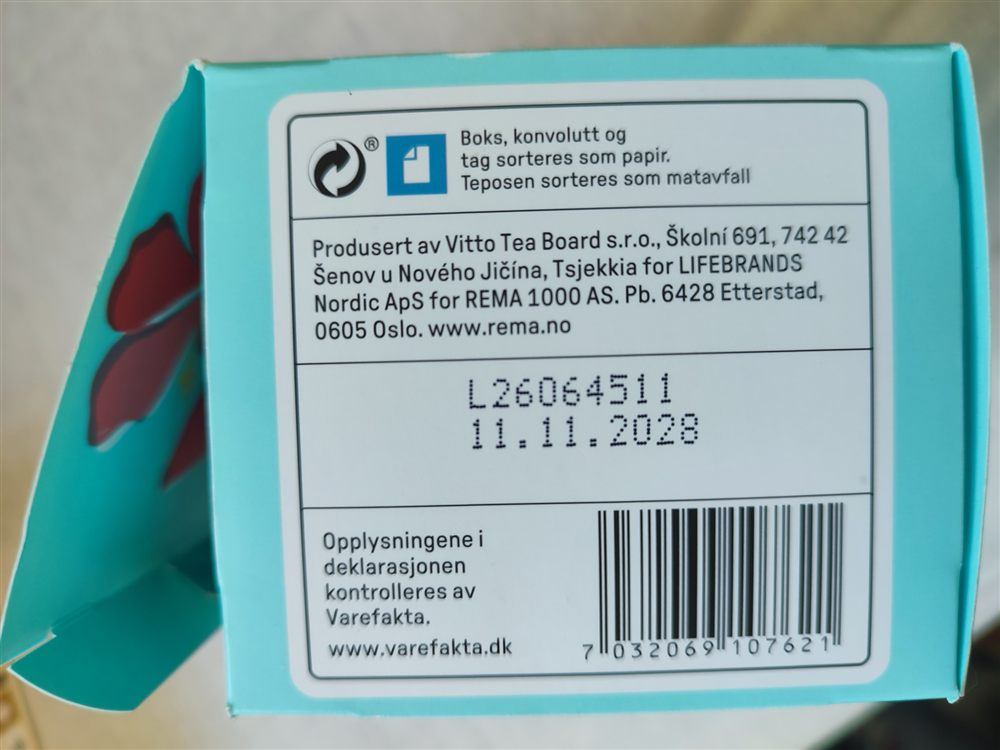
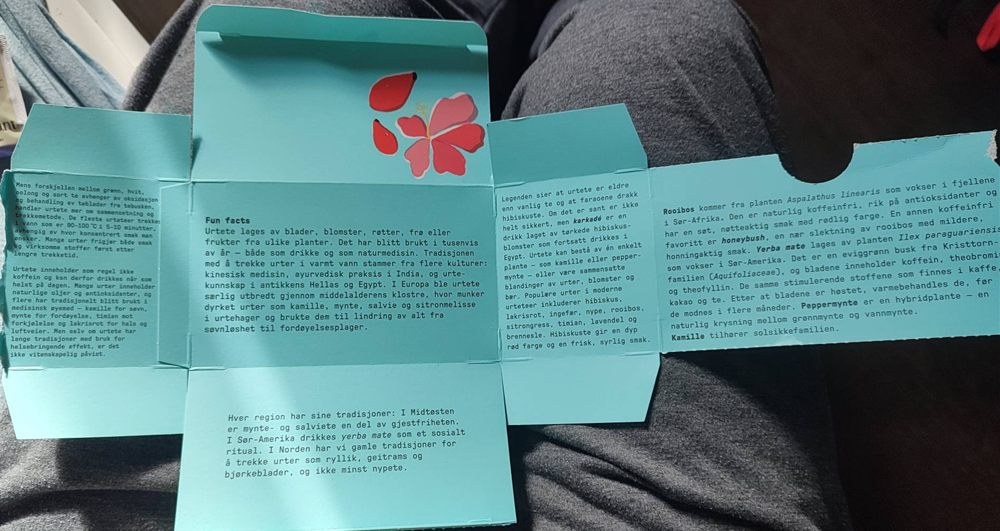
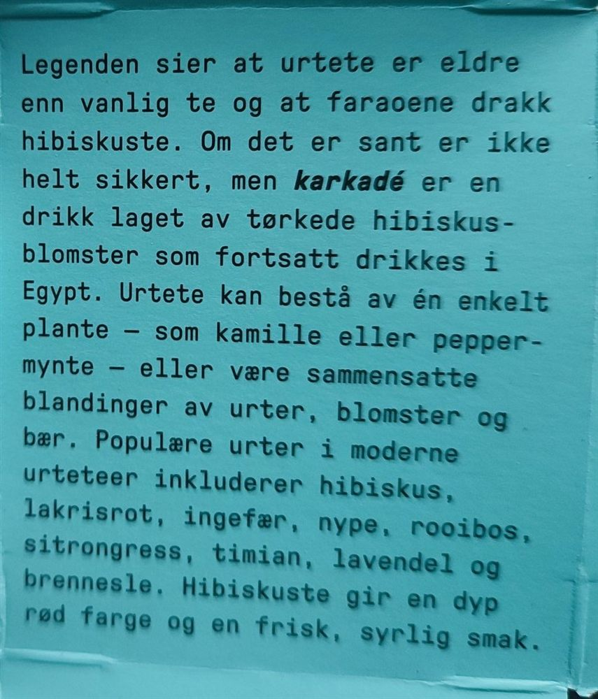
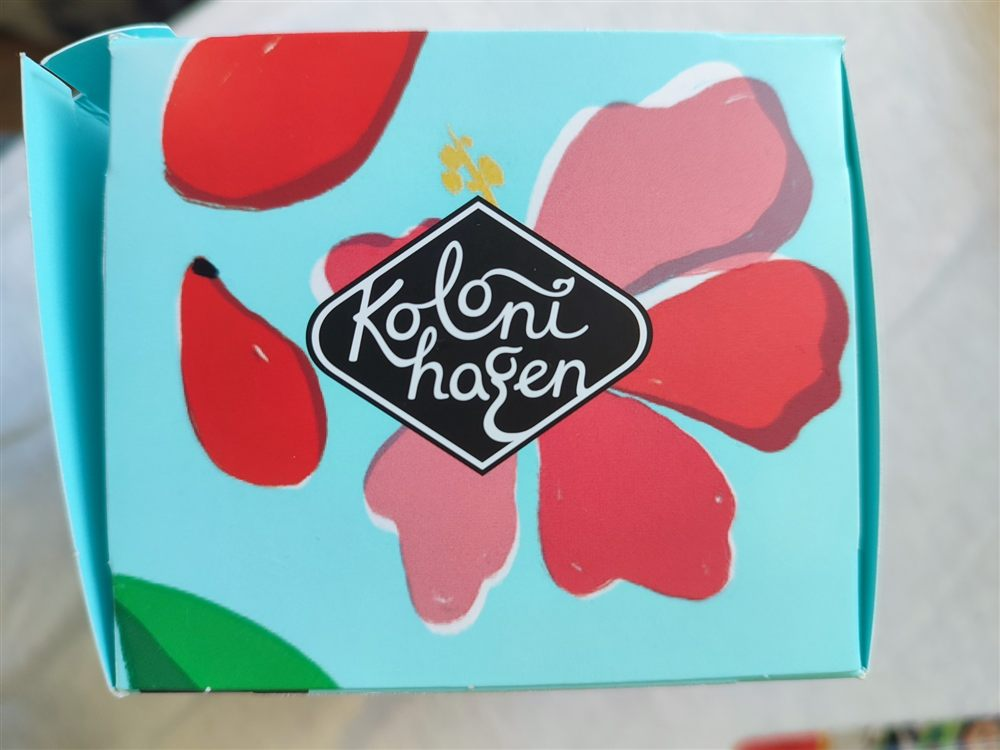

Nórsky čaj z Česka
Táto krabička prišla z Nórska. Nórska značka, nórsky obchod, všetko napísané po nórsky. Až keď som ju otočil hore dnom, drobné písmo prezradilo, že čaj sa narodil oveľa bližšie k nám. A keď som ju rozložil, čakala ma vnútri celá malá učebnica.
Krabička z nórskeho obchodu

Na krabičke je bylinný čaj Nype & hibiscus – po nórsky šípky a ibištek. Je ekologický, bez kofeínu, v krabičke je 20 vrecúšok. Chuť opisuje ako „sladkú a jemne kyslastú“. Zalieva sa 200 ml vriacej vody a lúhuje 5 až 6 minút.
Na boku je krátky odkaz od výrobcu. Po slovensky by znel asi takto:
„My v Kolonihagene sa staráme o zem. Preto sú naše výrobky ekologické – bez chemických postrekov a umelých hnojív. Lebo chceme, aby sa ľahšie vyberalo jedlo, ktoré je dobré – pre teba aj pre zem.“
A v čiernom rámčeku hore sa píše, že jedna koruna z každej krabičky ide na projekty Kolonihagenu – za dobré podmienky pre zvieratá, zodpovednosť a zdravú pôdu.
Čo prezradil spodok krabičky

Na spodku krabičky, medzi čiarovým kódom a dátumom spotreby, stojí po nórsky:
„Produsert av Vitto Tea Board s.r.o., Školní 691, 742 42 Šenov u Nového Jičína, Tsjekkia for LIFEBRANDS Nordic ApS for REMA 1000 AS…“
Po slovensky: vyrobila firma Vitto Tea Board v Šenove u Nového Jičína v Česku – pre dánsku firmu Lifebrands Nordic – pre nórske obchody REMA 1000. Slovo Tsjekkia je jednoducho Česko po nórsky.
Takže „nórsky“ čaj sa miešal a balil na Morave, kúsok od našich hraníc.
Kto je kto
- Kolonihagen – nórska značka ekologických potravín. Od roku 2016 patrí väčšinou nórskej sieti obchodov REMA 1000 a predáva sa v jej predajniach.
- Vitto Tea Board – česká čajová firma. Okrem vlastného čaju vyrába čaje aj pre cudzie značky a obchodné reťazce po celej Európe.
- Lifebrands Nordic – dánska firma, cez ktorú čaj putoval k obchodníkovi. Viac sa o nej zistiť nepodarilo.
A čo je vnútri?
Najväčšie prekvapenie ma čakalo, keď som krabičku rozložil. Zvnútra je celá popísaná – je to malá učebnica bylinkových čajov. Kto krabičku len otvorí, vyberie vrecúško a potom ju vyhodí, nič z toho neuvidí.

Čo sa tam dá dočítať (po slovensky, skrátene):
- Bylinkový čaj sa robí z listov, kvetov, koreňov, semien alebo plodov a pije sa tisíce rokov – v Číne, v Indii, v starovekom Grécku aj v Egypte. V Európe ho rozšírili stredoveké kláštory, kde mnísi pestovali v záhradách rumanček, mätu, šalviu a medovku.
- Každý kraj má svoje zvyky: na Blízkom východe ponúkajú hosťom mätový a šalviový čaj, v Južnej Amerike sa v spoločnosti pije yerba maté a na severe rebríček, brezové listy a hlavne šípkový čaj.
- Mäta pieporná je prirodzený kríženec dvoch mát – presne ako píšeme v článku o mäte piepornej. A rumanček je z tej istej rodiny rastlín ako slnečnica.

Najkrajšia je však legenda: vraj je bylinkový čaj starší ako ten pravý a ibištekový čaj pili už faraóni. Krabička poctivo dodáva, že či je to pravda, isté nie je. Nápoj zo sušených kvetov ibišteka – karkadé – sa však v Egypte pije dodnes.
A ešte jedna veta, akú na obale čaju len tak nenájdete. Bylinky sa vraj tradične pili na spánok, na trávenie či pri prechladnutí – „ale hoci majú dlhú tradíciu, ich účinok na zdravie nie je vedecky dokázaný“. Výrobca teda nič nesľubuje. To sa mi páči.
Cesta jedného čaju
Na krabičke nie je napísané, odkiaľ sú šípky a ibištek. Cesta teda mohla vyzerať asi takto:
- Šípky a kvety ibišteka zozbierali pestovatelia – ktovie kde vo svete.
- V Šenove ich zmiešali, naplnili do vrecúšok a zabalili do krabičky s nórskym textom.
- Krabička precestovala vyše 1 200 kilometrov na sever – do Nórska, na poličku obchodu REMA 1000.
- A odtiaľ sa vrátila späť na juh – do mojej zbierky.
Keď si teda zalejem tento „nórsky“ čaj, pijem vlastne čaj od susedov. A ešte k tomu sa nemusím ponáhľať – spotrebovať ho treba do 11. 11. 2028.

Zdroje
- Text na krabičke (vlastné fotografie)
- Vitto Tea Board – ESM Magazine (anglicky)
- Reitan Retail – značky REMA 1000 (anglicky)
- Rema a Kolonihagen – Dagens Næringsliv (nórsky)
Text pripravil Claude, spolutvorca stránky.